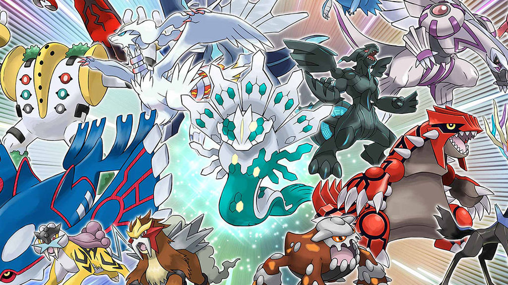

Legendarios

Un Pokémon legendario es una criatura especial, rara y destacable por su poder único y excepcional, en comparación con el resto de los Pokémon. Generalmente los Pokémon legendarios forman parte de una leyenda o mito Pokémon y suelen destacar por la dificultad que conlleva su obtención debido a que son muy raros de encontrar.
Clasificación
Según la programación de los videojuegos, los Pokémon legendarios se pueden dividir en dos diferentes grupos según la naturaleza de los mismos:
Pokémon sublegendarios es un término solamente incluido en el código del videojuego para regulaciones de combates y, por tanto, no es un nombre oficial. Estos Pokémon no tienen ninguna clase de restricción para su uso y se permiten en recintos de combate como el Árbol de Combate o el Frente Batalla así como en competiciones online y los campeonatos de videojuegos. En la Pokédex de Alola estos Pokémon se marcan con un fondo de color verde.
Pokémon legendarios como tal, también conocidos en algunos contextos como Pokémon restringidos son el principal grupo de Pokémon legendarios. Generalmente suelen ser las mascotas de las versiones de distintos videojuegos, aunque también se incluyen algunos otros. El uso de estos Pokémon no se permite en recintos de combate, aunque en ciertos formatos de competiciones online y de campeonatos de videojuegos se permite, pero limitando su número a un máximo de uno o dos por equipo. Sus características totales son, en general, superiores a las de Pokémon sublegendarios.
Los Pokémon singulares es una denominación existente desde la quinta generación. Antes de la quinta generación, todos los Pokémon singulares se consideraban simplemente legendarios. Entre la quinta y la octava generación pasaron a ser un grupo dentro de los Pokémon legendarios, es decir, eran legendarios y singulares a la vez. Sin embargo, desde la novena generación están programados como un grupo aparte. Son Pokémon tan raros que habitualmente solo es posible su obtención por medio de eventos. No es necesaria su obtención para completar la Pokédex Nacional y no pueden ser intercambiados mediante la GTS. El uso de estos Pokémon no se permite en recintos de combate, en competiciones online ni en campeonatos de videojuegos. Excepcionalmente alguno de ellos puede ser capturado sin necesidad de eventos, como Deoxys en Pokémon Rubí Omega y Pokémon Zafiro Alfa o Keldeo en el DLC de Las nieves de la corona de Pokémon Espada y Pokémon Escudo; o ser entregados por tener datos de guardado de otros videojuegos, como Mew y Jirachi en Pokémon Diamante Brillante y Pokémon Perla Reluciente o Darkrai y Shaymin en Leyendas Pokémon: Arceus.
Controversia en la clasificación
Antes de Pokémon Escarlata y Pokémon Púrpura, existía cierta controversia en la clasificación de los Pokémon singulares y de Ultraentes a la hora de categorizarlos dentro del grupo de Pokémon legendarios, ya que la programación de los videojuegos de la séptima y la octava generación los clasifica de forma distinta a como lo hacen los medios de The Pokémon Company International (TPCi). Sin embargo, con la llegada de la novena generación, los Ultraentes dejan de estar en la categoría de sublegendarios en el código de los videojuegos. Además, también en dicha generación los Pokémon singulares fueron cambiados a otra categoría separada de los Pokémon legendarios.
Según los medios de TPCi
Los medios oficiales regulados por The Pokémon Company International y externos a los videojuegos (como la web oficial de Pokémon o las cuentas de Pokémon en redes sociales) sitúan a los Ultraentes fuera del grupo de Pokémon legendarios. Por ejemplo, en uno de los cuestionarios de la página web del festival de Pokémon legendarios celebrado en el 2018, se decía que Pheromosa no era un Pokémon legendario. Estos medios oficiales son algo más ambiguos a la hora de determinar la posición de los Pokémon singulares, ya que en ocasiones se los incluye entre los Pokémon legendarios y otras veces en un grupo completamente separado, aunque lo más frecuente suele ser situarlos aparte.
Características generales
Los Pokémon legendarios se caracterizan, sobre todo, por su enorme poder, ya que la mayoría de ellos tienen unas características base iguales o superiores a 570. Existen muy pocos miembros de cada especie legendaria. En los videojuegos de Pokémon suelen ser muy difíciles de capturar debido a su bajo ratio de captura. Muchos Pokémon legendarios pertenecen a la mitología y leyendas Pokémon, siendo parte de la tradición oral de las personas del mundo Pokémon, convirtiéndolos en criaturas muy importantes que muchas veces influyen en el folclore y tradiciones de los pueblos, villas y ciudades. Los Pokémon legendarios, como los Pokémon bebé, no pueden criar. En su gran mayoría suelen no tener sexo a excepción de Latios, Latias, Heatran, Cresselia, Tornadus, Thundurus, Landorus, Kubfu, Urshifu, y Enamorus. Por otra parte, con la excepción de Código Cero, Cosmog, Cosmoem y Meltan, los Pokémon legendarios y singulares no pueden evolucionar. Varios son capaces de cambiar de forma, megaevolucionar o sufrir una regresión primigenia. Muchos de los Pokémon legendarios suelen tener algún movimiento o habilidad exclusivos, como los ataques geocontrol de Xerneas o furia candente de Moltres de Galar y las habilidades latido oricalco de Koraidon o guardia espectro de Lunala. A partir de la sexta generación, todos los Pokémon legendarios atrapados en los videojuegos o procedentes de evento tienen al menos 3 de sus 6 IVs al máximo (31). Este detalle les impide tener bajo ningún concepto un poder oculto de tipo lucha, debido a la forma en el que este se calcula.